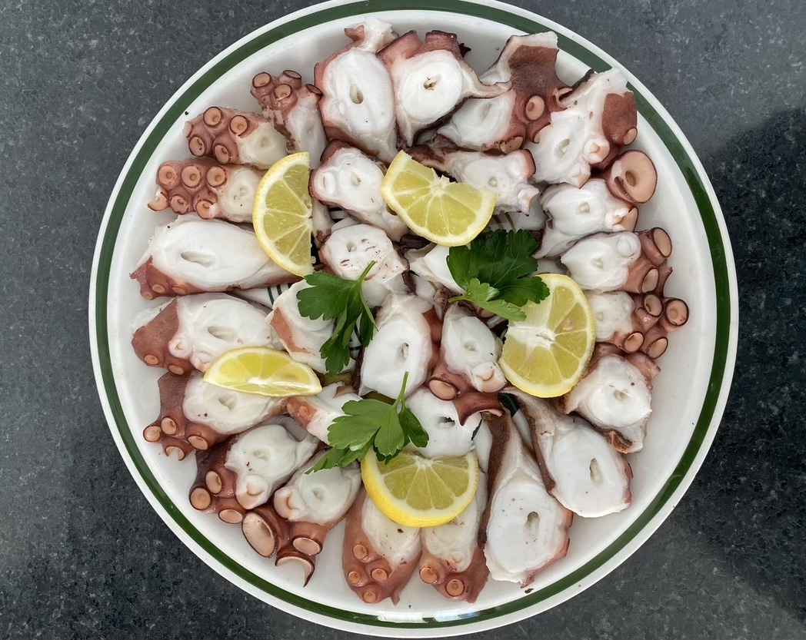
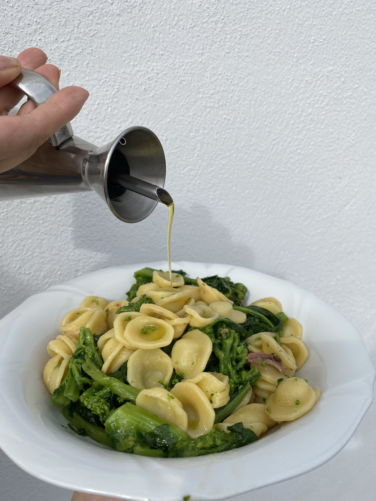
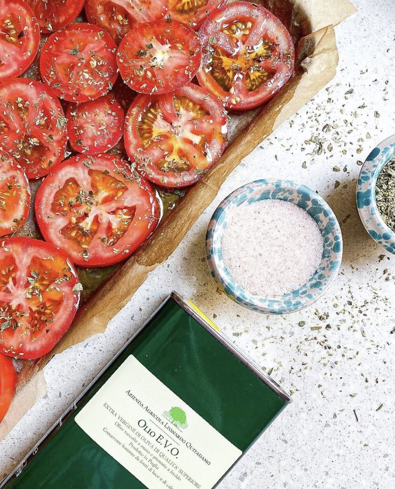

Cold Octopus Salad
A refreshing and flavorful salad with tender octopus and crisp vegetables, dressed in OliaRosa's finest extra virgin olive oil.
- 4 Tbsp Extra virgin olive oil
- 1 lb octopus, cleaned and cooked
- 1 bunch fresh italian parsley, chopped
- 2 ripe tomatoes, chopped
- Juice of 1 lemon
- Salt and pepper to taste
- In a large bowl, combine the octopus, tomatoes and chopped parsley
- Marinade generously with olive oil and lemon juice, then season with salt and pepper.
- Toss gently to coat all ingredients with the dressing.
- Chill for at least 1 hour before serving to allow flavors to meld.
- Garnish with more chopped parsley and the final touch of extra virgin olive oil for the best flavor.

Anchovy Bietola Orecchiette
Enjoy the bold flavors of this traditional Apulian dish, also known as 'Orecchiette Alla Mattinatese'.
- Cook the orecchiette pasta in salted boiling water until al dente, then drain.
- In a pan, heat olive oil over medium heat and sauté garlic and anchovies until fragrant.
- Add the kale and cook until wilted, then season with salt to taste.
- Toss the cooked pasta with the kale mixture, and finish with a generous drizzle of our extra virgin olive oil.

Roasted Tomatoes
Succulent tomatoes roasted to perfection, accentuated by the subtle notes of our signature olive oil.
- 4 Tbsp Extra virgin olive oil
- 4 large tomatoes, sliced
- 1 tbsp balsamic vinegar
- 1 clove garlic, minced
- 1 tbsp dried oregano
- Salt and pepper to taste
- Preheat the oven to 375°F (190°C).
- Place the tomato slices on a baking sheet and drizzle with extra virgin olive oil and balsamic vinegar.
- Sprinkle with minced garlic, dried oregano, salt, and pepper.
- Roast in the oven for about 45 minutes until the tomatoes are tender and caramelized.
- Remove from the oven and let cool slightly before serving.